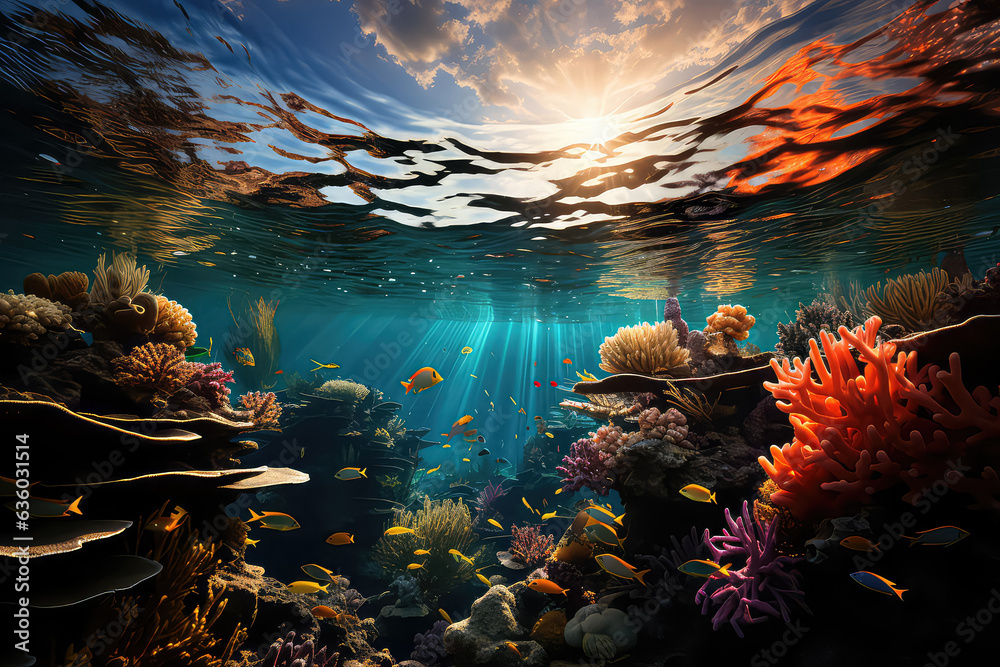
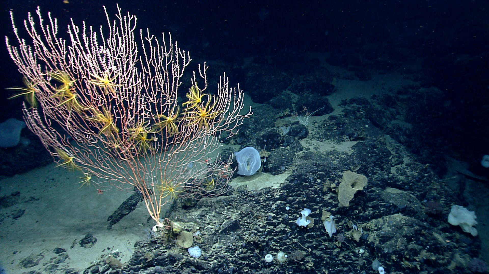
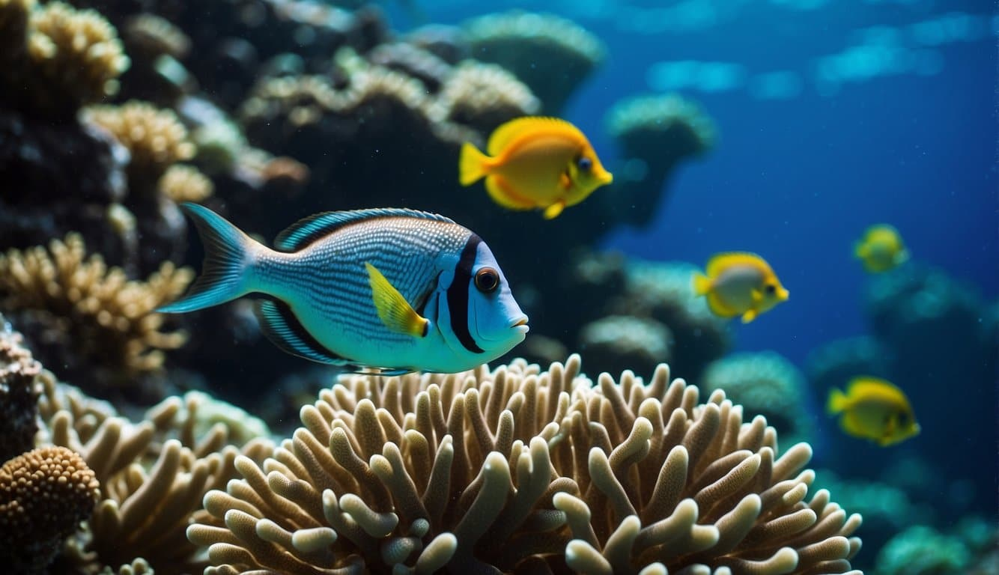
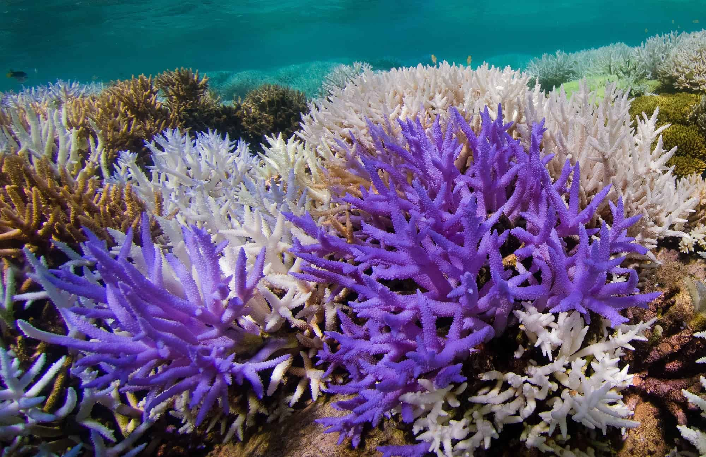

Marine Biodiversity
Introduction
Marine biodiversity refers to the variety of life in the oceans, including all the different types of organisms that live there. This vast realm of life is incredibly diverse, with millions of species that vary widely in their size, shape, and behavior. Marine biodiversity is important for a variety of reasons. Firstly, it plays a crucial role in maintaining the health of our planet's ecosystems. Secondly, many of the species that live in the ocean are economically important, providing food, medicine, and other resources for humans. Finally, marine biodiversity is a source of wonder and fascination, offering endless opportunities for scientific exploration and discovery.
The Deep-Sea Ecosystem
The deep sea is a unique environment, characterized by high pressure, low temperatures, and complete darkness. Despite these challenging conditions, the deep sea is home to a rich and diverse ecosystem. Deep-sea organisms have adapted to these conditions in a variety of ways. For instance, many deep-sea creatures produce their own light through a process known as bioluminescence. Others have developed specialized adaptations to help them survive in the cold, dark depths of the ocean. Despite the isolation of the deep sea, it is connected to the rest of the ocean through currents, allowing species to migrate and mix.
Marine Life Adaptations
Marine organisms have had to adapt to a variety of challenges in order to survive in their underwater environment. These adaptations range from bioluminescence to pressure resistance and thermoregulation. Bioluminescence is the ability of some marine organisms to produce light. This can be used for communication, attracting prey, or defending against predators. Pressure resistance is another important adaptation, as the deep sea is characterized by high pressure. Many deep-sea creatures have evolved to withstand these pressures without their cells bursting. Thermoregulation is also crucial, as the temperature in the deep sea can fluctuate dramatically. Some deep-sea organisms can regulate their body temperature, allowing them to survive in the cold, dark depths of the ocean.
Coral Reefs Biodiversity
Coral reefs are a crucial part of marine biodiversity. They are complex ecosystems that support a diverse array of species. Coral reefs are made up of colonies of tiny organisms known as polyps. These polyps build their homes out of calcium carbonate, creating a structure that provides a habitat for a wide variety of species. Coral reefs are incredibly diverse, with a wide range of species that vary in size, shape, and behavior. This diversity is crucial for the health of the reef, as it allows for a variety of ecological roles to be filled.
